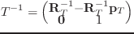
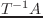

viewingオブジェクトは、viewing座標系を処理する。
この座標系の原点は仮想カメラの位置に置かれる。
-z軸方向がオブジェクトの視線方向で、xy平面が投影画面である。
viewingがcascaded-coordsクラスを継承するので、
:translateや:rotateや:transformのような
座標変換メッセージを受け付ける。
また、cascaded-coordsから得られる他のオブジェクトを張り付けることができる。
したがって、移動物体上のカメラシステムのシミュレーションができる。
viewingの主な目的は、ワールド座標系で表現されるベクトルを
カメラ座標系に変換することである。
変換は、一般の座標変換に対して逆方向で与えられる。
このローカル座標系内のベクトルはワールド座標系における表現に変換される。
したがって、viewingはviewcoordsスロットに逆変換された左手系変換を持つ。
このスロットは、viewing座標系として普通参照される。
Figure:
viewing座標系と投影画面
|  |
viewing [クラス]
:super cascaded-coords
:slots (viewcoords)
-
- viewing変換を定義する。
:viewpoint [メソッド]
-
-
このviewingの原点のベクトル位置を返す。
:view-direction [メソッド]
-
-
viewingの原点から画面の中心までのベクトルを返す。
これは、viewing座標系のz軸方向である。
:view-up [メソッド]
-
-
ワールド座標系におけるこのviewingのy軸ベクトルを返す。
y軸は、viewportの上方である。
:view-right [メソッド]
-
-
ワールド座標系におけるこのviewingのx軸ベクトルを返す。
x軸は、viewportの水平右方向である。
:look from &optional (to #f(0 0 0)) [メソッド]
-
-
:lookは、その目がfromに位置されており、toの位置を
見ているとしてviewing座標系を設定する。

-
- viewingは、cascaded-coordsを継承するので、:posや:rotや:euler
や:rpyなどの:initのパラメータはすべてviewing座標系の位置や姿勢を
指定することに使用できる。
しかしながら、viewingの:initは回転を決定する簡単な方法を持っている。
もし、:targetだけが与えられたとき、視線方向は視点からtarget位置
の方向に決定され、:view-rightベクトルはワールド座標系のxy平面に平行な
x軸に決定される。
:view-directionを:targetの代わりに指定しても同じ様な
効果を得られる。
もし、:view-upまたは:view-rightパラメータを:targetあるいは
:view-directionに加えて指定するならば、3つの回転パラメータをすべて
自分自身で決定することができる。
2016-03-23